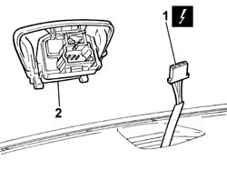

5010D56 SOLAR SENSOR - R R AFTER CHECKING ELECTRICAL SYSTEM
- Path
- Procedures > 50 AUXILIARY UNITS > 5010 HEATING/VENTILATION - MISCELLANEOUS > 5010D AIR TEMPERATURE RECORDING SYSTEM > 5010D56 SOLAR SENSOR - R R AFTER CHECKING ELECTRICAL SYSTEM
- Kind
- repair procedure (removal / refitting; the operation number is the code)
- Applies to
- all engines; all production periods
- Interactive page
- https://sloeber94.github.io/elrnDB-fUlss/en/#/179007452
Applies to: all engines; all production periods
 Removing
Removing
 Refitting
RefittingOp. 5530B56 BATTERY DRIP TRAY COVER - R.R.
- Disconnect the negative battery terminal.
- Release the solar sensor using a suitable tool.
1. Disconnect the electrical connection.
2. Remove the solar sensor.

Applies to: all engines; all production periods
Refitting
Removing- Connect the electrical connection.
- Position the solar sensor in the housing in the dashboard.
- Connect the negative battery terminal.
Topics linked from this page (1)
Topics that link to this page (12)
- 5010B24 UNDER-FACIA AIR DUCTS R R
- 5010B39 FRONT CONNECTION FOR CENTRAL AIR DUCT TO REAR SEATS - R R
- 5010B45 DUCT FROM CLIMATE CONTROL SYSTEM - R R
- 5040C13 AIR CONDITIONER HEATER/DISTRIBUTOR ASSEMBLY - R R
- 5040C22 AIR CONDITIONING FAN ASSEMBLY - R.R.
- 5040C50 AIR CONDITIONING HEATER RADIATOR - R.R.
- 5040C64 A/C MANUAL CONTROL SWITCH (ONE) - R+R
- 5040D75 AIR CONDITIONING RECIRCULATION FLAP CONTROL MOTOR - R.R.
- 5040D90 AIR CONDITIONER SYSTEM WIRING BUNDLE - R R
- 7040A10 DASHBOARD TRIM - R+R
- 7040A97 FACIA TRIM SUPPORT BEAM - R R
- 7040L17 PASSENGER COMPARTMENT FLOOR FRONT CARPET - R R